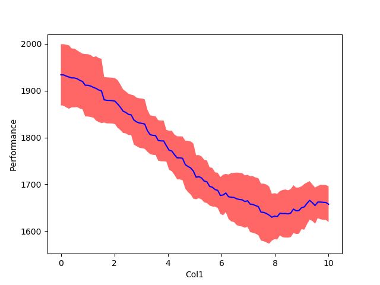

Manual¶
Quick Start¶
To run the examples, just download the data and start the python console. We can then import Fanova and start it by typing
>>> import fanova
>>> import csv
>>> path = os.path.dirname(os.path.realpath(__file__))
>>> X = np.loadtxt(path + '/example_data/online_lda/online_lda_features.csv', delimiter=",")
>>> Y = np.loadtxt(path + '/example_data/online_lda/online_lda_responses.csv', delimiter=",")
>>> f = Fanova(X,Y)
This creates a new Fanova object and fits the Random Forest on the specified data set.
To compute now the marginal of the first parameter type:
>>> f.quantify_importance((0, ))
0.056762881343945304
Fanova also allows to specify parameters by their names.
>>> f.quantify_importance(("Col0", ))
0.056762881343945304
Advanced¶
If you want the Fanova only a certain quantiles (let’s say between 10% and 25%) of the data you can call it by:
>>> f = Fanova(X,Y)
>>> f.set_cutoffs(quantile=(10, 25))
Furthermore fANOVA now supports cutoffs on the y values. These will exclude parts of the parameters space where the prediction is not within the provided cutoffs.
>>> f.set_cutoffs(cutoffs=(-np.inf, np.inf))
You can also specify the number of trees in the random forest as well as the minimum number of points to make a new split in a tree or your already specified configuration space by:
>>> f = Fanova(X,Y, config_space=config_space, num_trees=30, min_samples_split=3)
More functions¶
- f.get_most_important_pairwise_marginals(n)
Returns the n most important pairwise marginals
- Fanova.marginal_mean_variance_for_values(p, v)
Computes the mean and standard deviation of the parameter (or parameterlist) p for a certain value v
Visualization¶
To visualize the single and pairwise marginals, we have to create a visualizer object first containing the fanova object and configspace
>>> import visualizer
>>> vis = visualizer.Visualizer(f, config_space)
We can then plot single marginals by
>>> vis.plot_marginal(1)
what should look like this
NOTE: For categorical values use the function plot_categorical_marginal(parameter) instead.
The same can been done for pairwise marginals
>>> vis.plot_pairwise_marginal([0,2])
If you are just interested in the N most important pairwise marginals you can plot them through:
>>> create_most_important_pairwise_marginal_plots(dir, n)
and Fanova will save those plot in dir. However, be aware that to create the plots Fanova needs to compute all pairwise marginal, which can take awhile!
If you’re not interested in the plot itself, but want to extract the values for your own plots, simply call
>>> vis.generate_marginal(0)
The same for generate_pairwise_marginal([0,2]) and get_categorical_marginal().
At last, all plots can be created together and stored in a directory with
>>> vis.create_all_plots("./plots/")